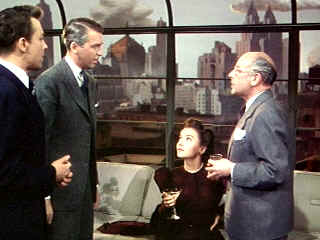

| Rope (SE)/B,B- |
| Universal/194881/FS
1.33 |
This is Hitchcock's "experimental" film. The director decided to
adapt the play Rope's End by Patrick Hamilton and film it as close to live theater as
possible. That meant filming each ten minute reel continuously and trying to hide the reel changes.
Typically, Hitchcock will fill the screen with someone's back and the change of reel is disguised
in the stationary fabric. I think Hitchcock has to get extra points for daring to be different.
Does the method enhance the film? Probably not, in fact, the material could likely have provided
more interest cut in the traditional way. Suspense could have been the prime objective rather than
hiding reel changes.
 |
| Introducing Rupert Cadell. ©Universal |
Rope explores the Nietzsche concept of the superior being.
Brandon Shaw and Phillip Morgan are tight friends. They have grown to manhood together and their
bonds go deeper than simple classmates. They believe they are members of the intellectual elite,
granting them rights above common morality. They choose to murder a former classmate they feel is
insignificant and inherently inferior. The murder is an exercise in effete posturing the logical
extension for these young men in their twisted beliefs. These products of the prep school world,
obviously pampered and privileged, need to justify their beliefs. They cap off their exercise in
deviation by throwing a party with the corpse, so to speak, as a center piece. This is the icing on
the deed. The small party includes the father, aunt and fiancée of the murdered man, the
former boy friend of the fiancée, and Rupert Cadell, the clever former house master and mentor to
the young men. Cadell is the special challenge, the cherry on the cake.
Rope is far too manipulative, but it has Stewart. Stewart
redeems the picture for me. Until he appears at the party, it’s rather tough going watching the
artificial John Dall as Brandon Shaw and Farley Granger as Phillip Morgan fidget around the
apartment after the murder. It’s all so homosexual as well. Dall is pretty bad in my estimation.
Granger overacts as well. But Cedric Hardwick as Mr. Kentley has some nice moments and Constance
Collier adds some laughs at the sister in law Mrs. Atwater. Stewart’s the redeemer.
There are some minor color registration problems with the transfer elements,
otherwise the color is very rich. Slight color pulsing also indicates some uneven three-strip
Technicolor© wear. A few specks of dirt show up on the elements here and there. Sharpness is less
that optimal, but the lack of top notch resolution does not interfere with the production.
On board for this Hitchcock documentary are Arthur Laurents who wrote the
screenplay, Hugh Cronyn who adapted the play into a film treatment, star Farley Granger and a touch
of Patricia Hitchcock O'Connell. Laurents is very out front about the homosexual nature of the
content. He is bemused by the attitude everyone had of ignoring explicit reference to homosexuality
during production. The difficulty of shooting with continuous camera movement is explained. In
addition to the documentary, the special edition contains the interesting trailer for Rope.
|
|
|
|

The
Movie Poster Archive includes extensive poster images from the films of stars like Susan Hayward,
Kirk Douglas, Katharine Hepburn and many more. Our featured star is James Stewart

Ghost Dog: Way of the Samurai

Ancient Japanese samurai tradition compared to new world Italian
mobsters filtered through the imagination of Jim Jarmusch. Forest Whitaker is outstanding.

Selections from the Feature Archive
include articles on Akira Kurosawa, Frank
Darabont, Blonde Bimbos, Hollywood Street Gangs, or Vietnam: The
Hollywood Pariah, and many more....

Is North by Northwest Hollywood's definitive exploration of the nose? From schnozzles to
beezeers, film mavens make the most of the foremost. Click on Mount Hitchcock for more.


Easy to use interface with lots of vintage posters for sale.

The home of Francis Ford Coppola's Zoetrope
Studios has more corridors of interest than you might expect.

The
Films2 website contains Films2.com is a comprehensive film website, providing a searchable shop
of new and archived video and region 2 DVDs to buy. You can check local cinema listings, read the
latest film news, reviews and gossip, and see the latest film trailers.
|